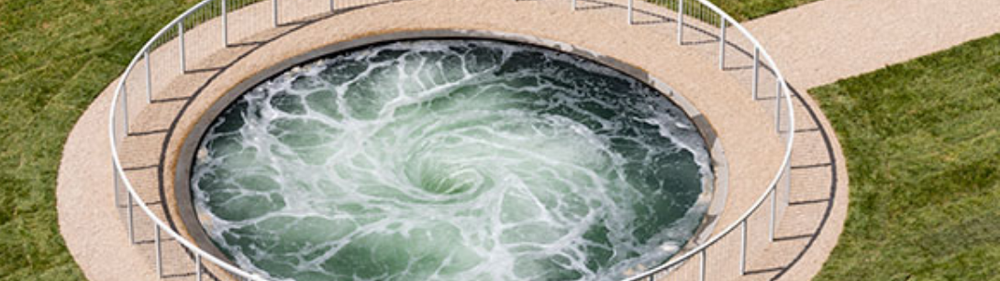

Furnace, Mipa 5 to Cobalt BLue over silver, Dark Brutal, No More, New Red to Dark, Non-Object Black, Turning the World Upside Down, Death of the Artist, Ascension, Blood in the Sky II, Non-Object (Oval), Vertical Abyss, God's Advice to Adam III, Dark Mipa 5 to Mipa 5, Pragnent White Within Me, Not the Thing Itself (But the Lessons Learned About It), Sky Below, Mount Moriah at the Gate of the Ghetto, Blood in the Sky, Untitled, Between the No Longer and the Not Yet, God's Advice to Adam II, Untitled, Hidden Mirror / Shulamite and Lajja Gauri, The Benighted II, The binighted, Shudder III, Shudder II, Shudder, Split in Two Like a Fish for Drying, God's Advice to Adam, Untitled, Untitled, In-Between II, Black, Babel, Gate III, Diana Blackended Redended, Oh Mother, Tell Me Life Again, The Night Encloses, Black Absence, Shedding, Blackness From Her Womb, Concave Convex Mirror (Diamond), HOWL, The World trembles when I retrieve from my ancient past what I need to live in the depths of myself, First and Last, The Innocents, Prosthetic II, Combusted Self, My Terrible Insides, All There Under My Skin III, Table of Law, Untitled, Yellow to Spanish and Pagan Gold mix, The Unremembered, Untitled, Dumped, Yellowcholia IV, Apep, Yellowcholia V, Untitled, Void Longing IV, Newborn, Organ, Non-Object Blakck, Tsunami Apple Red and Lime mix to Purple Candy Satin, Oriental BLue and Black Mist satin, Untitled, Red 2 mix to CObalt Blue, Naked, Untitled, Portrait, of Pink, Portrait of Pink II, Sacrifice, Untitled, Glisten, Untitled, Shade, Bleed, Untitled, Untitled, Black Fold, Double S-Curve, Void Pavilion VI, Mit dem Handstumpf gefundenes Leben, Namibia XIV, Something Like Her, Knot, Ritual Dark, Red ², Blood Hole, Symphony for a Beloved Daughter, Language of Birds, Out of Me, Trans-parence, Open Secret, A Blackish Fluid Excavation, What Bodies Do, Untitled, Blood Solid, Clear/Red to Pagan Gold satin, Another (M)other, Mound Untitled, Magenta to spanish Gold and Pagan Gold, Rectangle Within a Rectangle, Untitled, Glisten, Monochrome Grave Red, Untitled, Reach,Untitled Purple to Pagan Gold, Mirror ɹoɹɹᴉW, Red to Purple, Turning Blue to Red, Split (Oriental Ble / Ferrari Red), Untitled, Sky Mirror (fot Hendrik), Shadow Self, Involute, Shadow, Tongue, Destierro, Split (Matt Black), Mirror Mipa Blue to Wild Cherry and Black, Untitled stackhouse, Oriental Blue to Purple to Laser Red, Random Triangle Mirror, It Gleamed Like Blood, Wrap, Between Two Deaths, Muscular, Hung, I loking in at me, Seep, Sky Mirror, Blue, Untitled, Oral, Fetish Body Inside Out, First Milk, Unborn, Untitled, Mipa Blue, to Cobalt Blue, Hysterical Sexual, Shade, Ooze, Mother Rising,Tongue MemoryThree Days of MourningMother, MotherPlace UnderInRed to BlueUntitledHorizon RedLady ChrysantheShe BeginsToday you will be in paradiseRed Images–In the RedShe WolfTo a MouthTongueStone SaddleBull / MoonClipHer Body in Violet MistHer Body in Alizarin MistHeavenly BodyFirst CoveringFlayed IIFlayed, Weight
